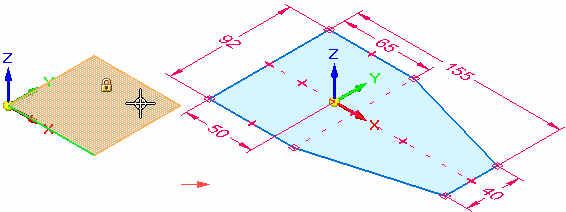
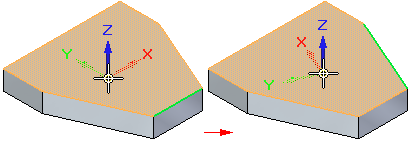

Working with coordinate systems
A coordinate system is a set of planes and axes used to assign coordinates to features, parts, and assemblies. You can draw sketches on the principal planes associated with a coordinate system.

-
You can use a coordinate system to position a part in an assembly.
-
You can measure distances relative to a coordinate system with the Measure Distance and Measure Minimum Distance commands.
-
You can place dimensions relative to a coordinate system.
There are two types of coordinate systems:
-
Base coordinate system
-
User-defined coordinate systems
Base coordinate system
The base coordinate system is displayed at the origin of a new part or assembly document. When constructing parts, you typically use one of the principal planes of the base coordinate system to draw a 2D sketch for the first feature of a new part. For example, you can draw the first sketch for a new part on the principal XY plane of the base coordinate system. You can also place dimensions and geometric relationships relative to the primary axes of the coordinate system.

User-defined coordinate systems
When you create a user-defined coordinate system, you can position the coordinate system relative to model geometry, another coordinate system, or in empty space.
When placing a user-defined coordinate system, you can use the shortcut keys to control the orientation of the coordinate system. When placing a coordinate system on a model face, the coordinate system is positioned relative to linear edges on the face. For example, you can use the N key to choose another model edge to orient the coordinate system. The valid shortcut keys are displayed in PromptBar while you are placing the coordinate system.

If you are working in an ordered environment, you can assign a user-defined name to your coordinate system using the Name box on the command bar as it is created. If you are working in the synchronous environment, you can assign a name to your user-defined coordinate system using the Rename command on the shortcut menu of a sketch selected in PathFinder.
Displaying coordinate systems
Coordinate systems are listed in, and controlled from, PathFinder.
-
The base coordinate system is listed near the top of PathFinder. You can use the check box in front of the word Base to hide and show it at the center of the graphics window.
-
Custom coordinate systems created with the Coordinate System command are listed in the Coordinate Systems collector in PathFinder.
-
You can use shortcut commands in the graphics window to control the display of all coordinate systems at once:
-
In an assembly, use the Show All/Hide All... shortcut command and the Show All/Hide All dialog box.
-
In part documents, use these commands:
-
Hide All→Coordinate Systems
-
Show All→Coordinate Systems.
-
-
Referencing a coordinate system in draft
In a draft document, you can show the base coordinate system or a custom coordinate system that you created. For more information, see Displaying the center of mass or coordinate system on a drawing.